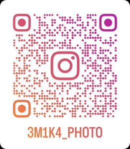
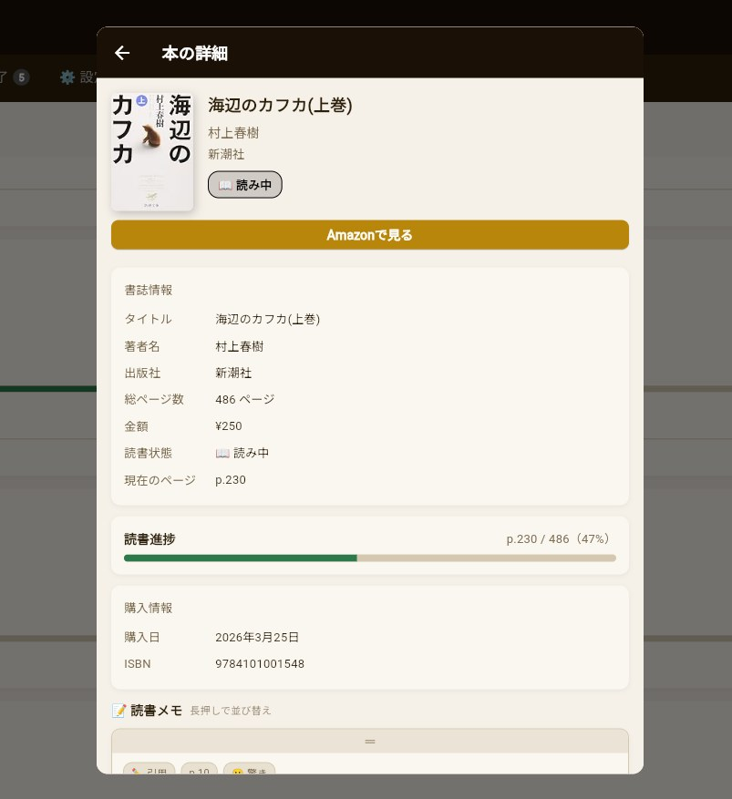
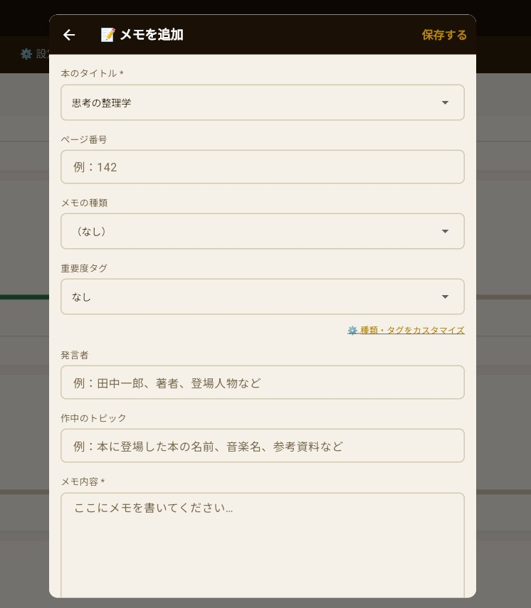
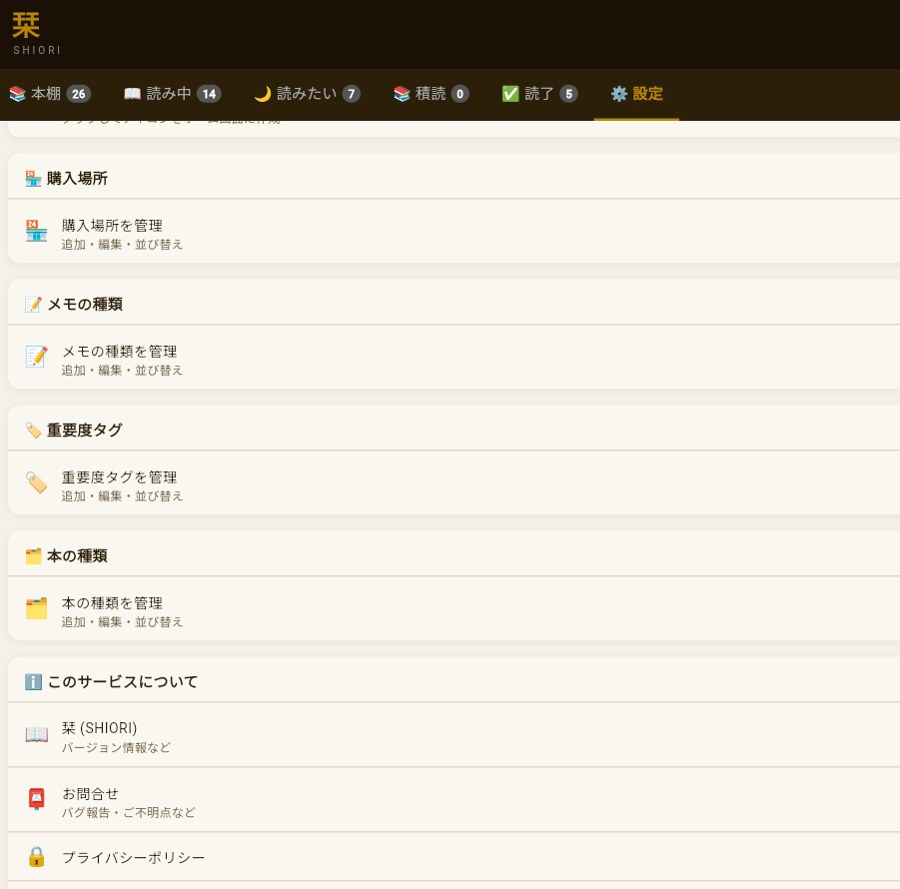
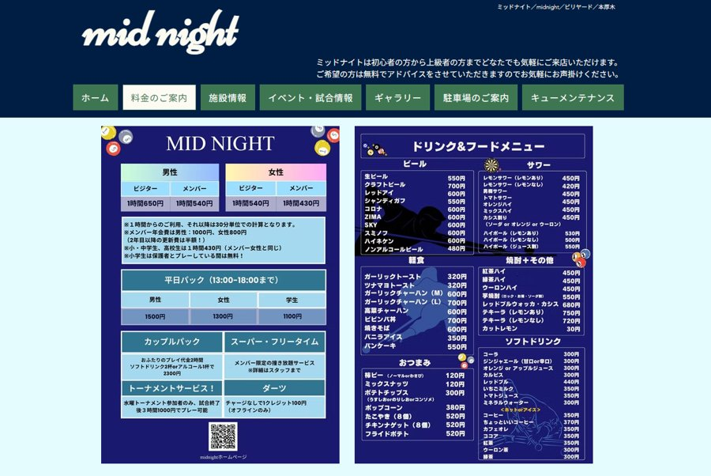
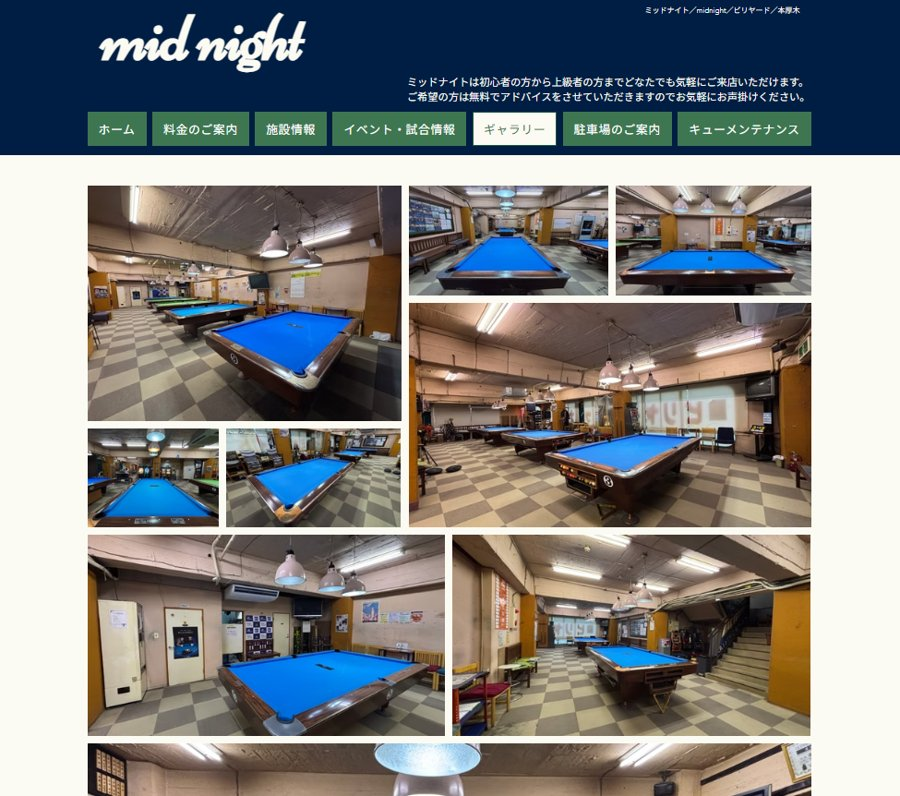
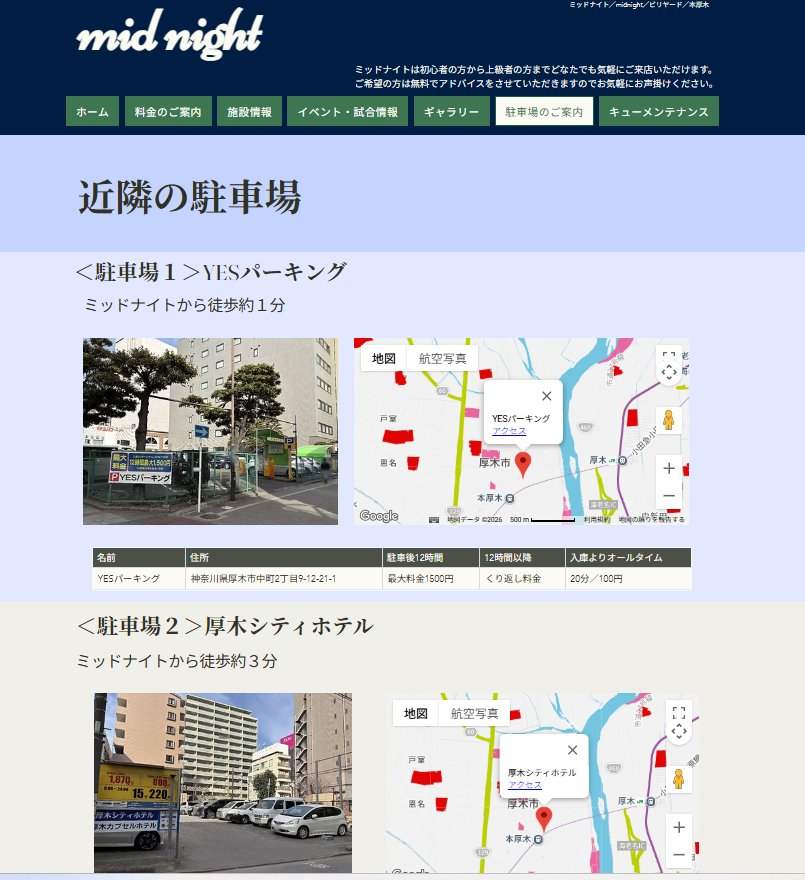

LINE Stickers
わらかのLINE スタンプ・絵文字
ビリヤード鳥や日常で使いやすいスタンプ・絵文字を販売中。
LINE STOREを見る
URL: store.line.me/stickershop/author/5413770/ja

PROFILE
山口笑加
Emika Yamaguchi
新卒からシステムテスト・一般事務・製造業など幅広い職種を経験。趣味で初めての開発で、Webサービスの読書管理アプリ「栞」をClaude Codeで開発・リリース。またYouTubeチャンネル運営・note執筆など多岐にわたり活動中。
写真歴10年以上。舞台撮影をメインに、ライブ・風景・動物など幅広く撮影。読売写真クラブ最優秀賞受賞。
お仕事のご相談やコラボのお声がけもお待ちしています。
お問合せはこちら。
アドレス：7jkha.5nt@gmail.com
インスタ：https://www.instagram.com/3m1k4_photo/
10+ YEARS BEHIND THE CAMERA
 読売写真クラブ 最優秀賞受賞作品
読売写真クラブ 最優秀賞受賞作品
写真歴10年以上。舞台撮影をメインに、ライブ・風景・動物・祭りなど幅広く撮影。
劇団鳥獣戯画の舞台を2012年より約12年間担当。読売写真クラブにて最優秀賞・入選など複数受賞。PIXTAにて写真販売中。

GALLERY
SHIORI — READING MANAGEMENT APP
読書管理「栞」
本の記録から読書メモまで、Googleアカウントで同期できるシンプルな読書管理サービス。初めてClaude Codeで作成。現在公開中。




※クリックして拡大
ちょうどいい、6つの機能。
余分な機能は要らない。読書に集中できる設計。
01
ISBN自動登録
番号入力だけで書名・著者・表紙を自動取得。
02
読書ステータス管理
読みたい・読書中・積読・読了の4段階で管理。
03
カスタマイズできるメモ
ページ番号・重要度タグ付きでメモを記録。
04
本棚ビュー
表紙がグリッドで並ぶ本棚表示に切り替え可能。
05
Googleアカウントで同期
サインインだけで全データを自動同期。
06
検索・フィルター
タイトル・著者・タグで検索、絞り込みも可能。
TWO CHANNELS — TWO PERSPECTIVES

わらかちゃんねる
ガジェット好き目線でのレビュー・開封・ミニマル生活を発信。登録者数547人・143本。

オカ女〜オカルト好き女子の陰謀論雑学ch
オカルト・陰謀論・仮想現実など独自視点で掘り下げる。登録者数1,160人・495本。
なぜか気になる日常の心理学
日常で感じる不安や人間関係の疑問を、心理学の視点から分かりやすく解説。
STICKERS & CHAT SERVICE
LINE Stickers
わらかのLINE スタンプ・絵文字
ビリヤード鳥や日常で使いやすいスタンプ・絵文字を販売中。
Chat Service
雑談・愚痴・相談を10往復チャットでお聞きします
電話・顔出しなし。LINE感覚で気軽に話せる、文字だけのお話し相手です。
WAKA-LOG — WORDPRESS
笑ログ
AI・デジタル・オカルトまで、気になったことを幅広く発信するWordPressブログ。
Note
MID NIGHT BILLIARD — HONATSUGI
ミッドナイトビリヤード 本厚木店
ミッドナイトビリヤード本厚木店のホームページ制作をWixで作成。
メニューはCanvaを使用。




※クリックして拡大